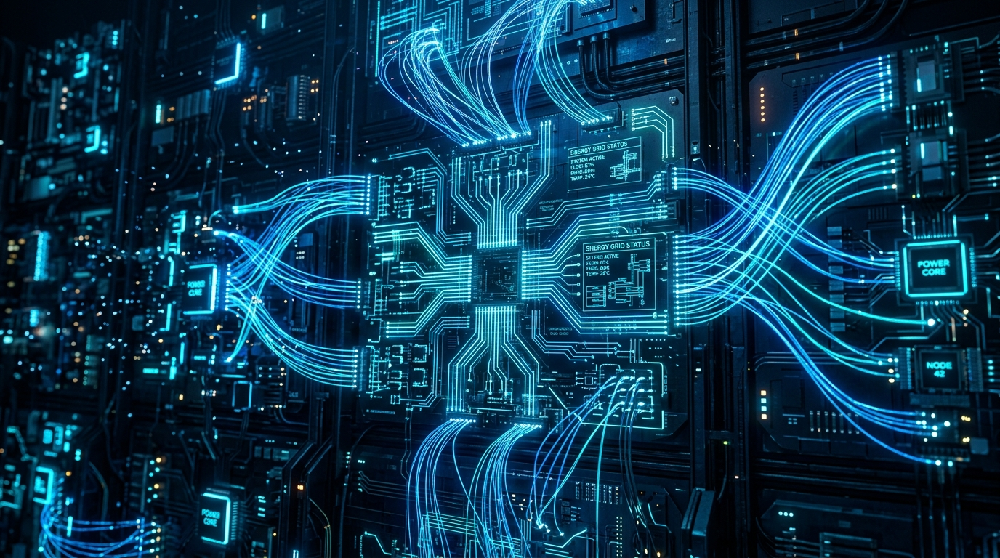
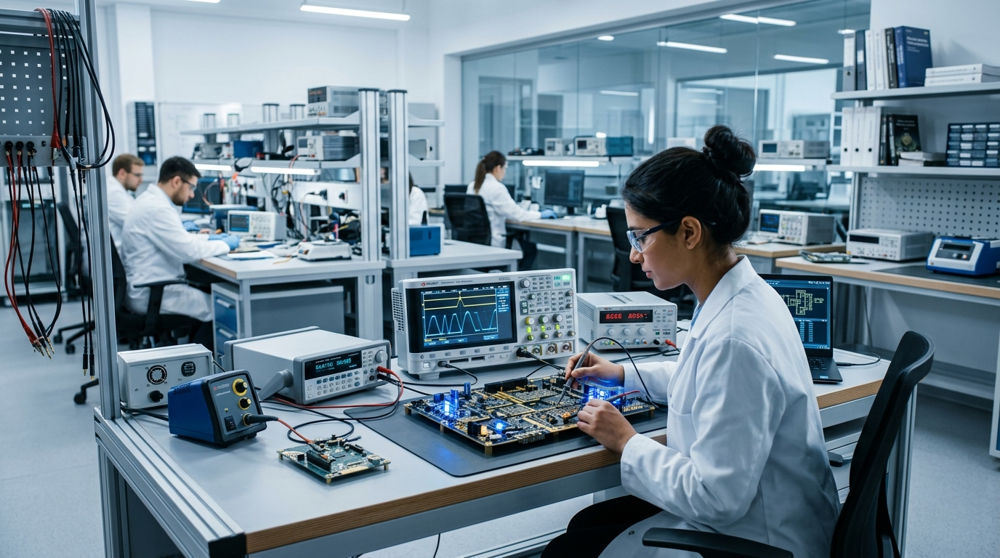
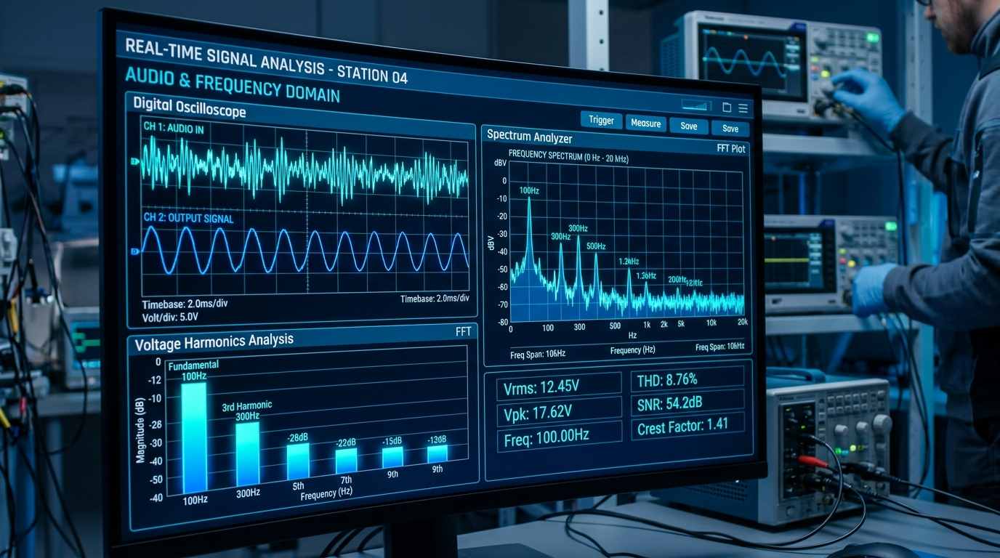

ELECTRICIDAD
“Conoce los conceptos fundamentales de la electricidad y su importancia en nuestra vida cotidiana.”

“Explora la energía que impulsa nuestro mundo.”
“VOLTIX TECHNOLOGY es un espacio educativo dedicado a explorar los fundamentos de la electricidad, los componentes eléctricos, sus aplicaciones y las nuevas tecnologías relacionadas con la energía.”
Comprensión rigurosa de las leyes de Ohm, Kirchhoff y los principios electromagnéticos que rigen los circuitos eléctricos.
Análisis práctico de componentes pasivos, semiconductores y sistemas de medición con instrumentación de laboratorio.
Exploración de la transición energética, generación limpia renovable, electromovilidad y automatización de procesos.

Tres dimensiones estructuradas para el estudio integral y continuo de la ingeniería eléctrica.
“Conoce los conceptos fundamentales de la electricidad y su importancia en nuestra vida cotidiana.”
“Explora componentes, circuitos y sistemas utilizados en diferentes aplicaciones.”
“Descubre nuevas tecnologías y soluciones relacionadas con la energía.”
Principios electrofísicos que determinan el comportamiento y flujo de energía en cualquier red.
Diferencia de potencial o fuerza electromotriz que impulsa a las cargas a través de un circuito cerrado.
Tasa o caudal de flujo neto de electrones que atraviesa una sección transversal por unidad de tiempo.
Oposición natural de los materiales al paso de corriente, disipando energía en forma de calor térmico.
Velocidad con la que la energía eléctrica es transformada o aprovechada para realizar trabajo útil.
Campos prioritarios donde los sistemas eléctricos impulsan el bienestar y la industria moderna.
 🏠 Hogar
🏠 Hogar
Sistemas en baja tensión, cuadros de distribución, protecciones diferenciales y automatización domótica.
 🏭 Industria
🏭 Industria
Subestaciones eléctricas, centros de control de motores y corrección de factor de potencia.
 💻 Electrónica
💻 Electrónica
Tarjetas de circuito impreso (PCB), microcontroladores y conversión eficiente de energía DC-DC.
 🤖 Automatización
🤖 Automatización
Autómatas programables (PLC), servodrives, sensores industriales y líneas automatizadas.
 🚗 Transporte
🚗 Transporte
Inversores de tracción de carburo de silicio, paquetes de baterías de alto voltaje e infraestructura de carga.
 🏢 Sistemas Eléctricos
🏢 Sistemas Eléctricos
Redes de transporte en muy alta tensión, mallas de puesta a tierra (PAT) y supervisión en tiempo real.
Tecnologías de generación limpia clave para el equilibrio y descarbonización del sistema eléctrico.

Conversión directa de la radiación lumínica en corriente continua mediante celdas fotovoltaicas de silicio, inyectada a la red por inversores de estado sólido.

Aprovechamiento de la energía cinética del viento a través de palas aerodinámicas que accionan generadores síncronos de imanes permanentes de gran potencia.

Transformación de la energía potencial del agua embalsada mediante turbinas Francis y Pelton, proporcionando inercia rotacional y estabilidad a la red.

Extracción de vapor y calor endógeno del subsuelo para mover turbinas de vapor en ciclo continuo las 24 horas del día sin intermitencia estacional.
Recursos didácticos preparados para la divulgación técnica: videos demostrativos, infografías y registros de laboratorio.

Visualización en tiempo real de ondas alternas sinusoidales, armónicos y mediciones de laboratorio.
“Explora nuestros contenidos y descubre cómo la energía y la tecnología están transformando nuestro mundo.”
EXPLORAR VOLTIX